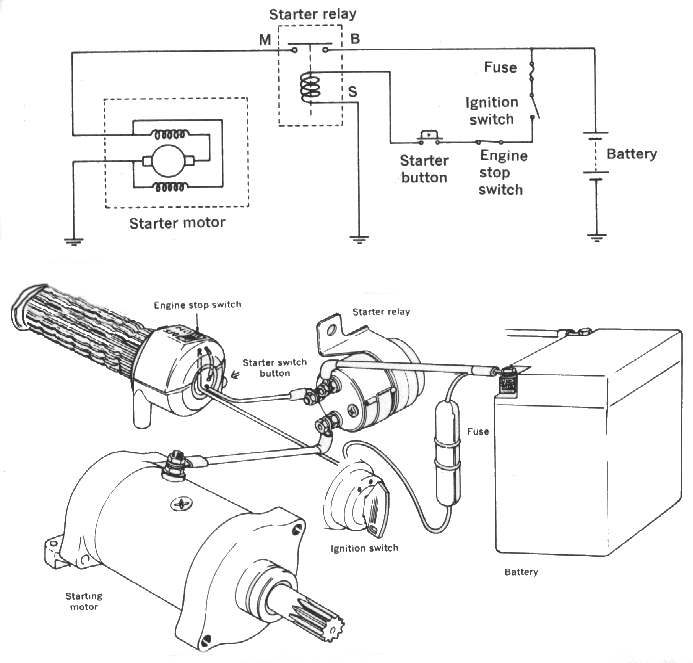

The engine spins at normal speed but does not fire, or only coughs. An engine needs fuel, a spark, compression and air at the right time. This check finds which one is missing, starting with the quickest and cheapest checks.
Is it safe to ride?
It will not run. Do not crank for long: you flatten the battery, overheat the starter and flood the engine.
Quick checks first
- Fuel in the tank? Look in with a torch; gauges can be wrong.
- Engine stop switch on RUN; side stand up; neutral.
- Carburettor: fuel tap ON or RES; choke ON when cold.
- Fuel injection: does the pump buzz for about 3 seconds at key ON? Is the warning light on?
- Strong smell of petrol? The engine may be flooded.
- If there is spark and compression but no start after the bike has stood, a blocked carburettor jet is likely. See Clear carburettor jets and passages.
- Starting fluid: a very small amount only. If the engine will not start, find the cause instead of adding more.
Diagnose it step by step
1Is there fuel in the tank, the tap ON (carburettor), or does the pump buzz at key ON (fuel injection)?
- No fuel: fill up. Tap OFF: turn it ON or RES. No pump buzz: go to No buzz from the fuel pump when the key is turned on.
- Yes: go to step 2.
2Is there a strong smell of fuel, or is the plug wet with petrol?
- Yes: the engine is flooded. Clear a flooded engine.
- No: go to step 3.
3Is there a strong blue-white spark with a spark tester?
- No spark: go to No spark at the spark plug.
- Weak, orange spark: go to Weak, thin or orange spark.
- Strong spark: go to step 4. Use Check for a spark safely.
4Is the plug in good condition and correctly gapped?
- No: Remove, check, gap and fit a spark plug.
- Yes: go to step 5.
5Is fuel reaching the engine? Carburettor: does fuel come out of the float bowl drain screw? Fuel injection: is the plug damp after cranking, and are there no fault codes?
- Carburettor, no fuel at the drain: No fuel reaching the carburettor and Check the fuel tap, lines and flow.
- Carburettor, fuel at the drain but plug stays dry: jets are blocked. Clean the carburettor.
- Fuel injection, fault code or dry plug: Read engine fault codes (fuel injection) and Check the fuel pump (fuel injection).
- Fuel arrives: go to step 6.
6Is the air filter clean and the air box free of rags, nests or water?
- No: Clean or replace the air filter.
- Yes: go to step 7.
7Is the compression normal? K-Light 125: 1.0 to 1.2 MPa.
- Low: go to Low compression. Use Test engine compression.
- Normal: suspect timing or, on fuel injection, a crank sensor gap that is too large (K-Light 125 manual). See Ignition timing suspected wrong.
Do not pour or spray petrol into the plug hole. It is a fire risk and hides the real fault.
Causes, most likely first
| Cause | How to confirm | Fix |
|---|---|---|
| No fuel, tap off, stop switch on STOP | Look and listen | Fill up; tap ON; switch to RUN |
| Flooded engine | Wet plug, smell of fuel | Clear a flooded engine |
| Fouled or worn plug | Plug black, wet or electrodes rounded | Remove, check, gap and fit a spark plug |
| No spark | Spark tester shows nothing | Check for a spark safely |
| Blocked carburettor jets | Fuel at drain, plug dry | Clean the carburettor |
| Fuel pump or injector fault | No buzz; fault code | Check the fuel pump (fuel injection) |
| Low compression | Gauge reading low | Test engine compression |
Reference values (K-Light 125)
| Item | Value | PDF page |
|---|---|---|
| Fuel pump run at key ON | about 3 s | 268 |
| Compression pressure | 1.0 to 1.2 MPa | 60 |